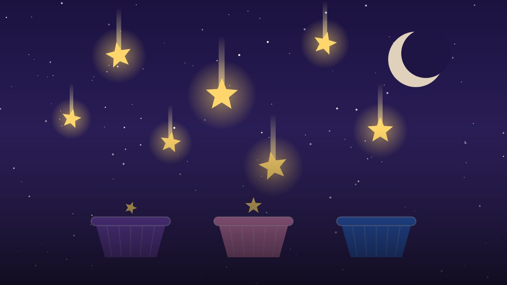
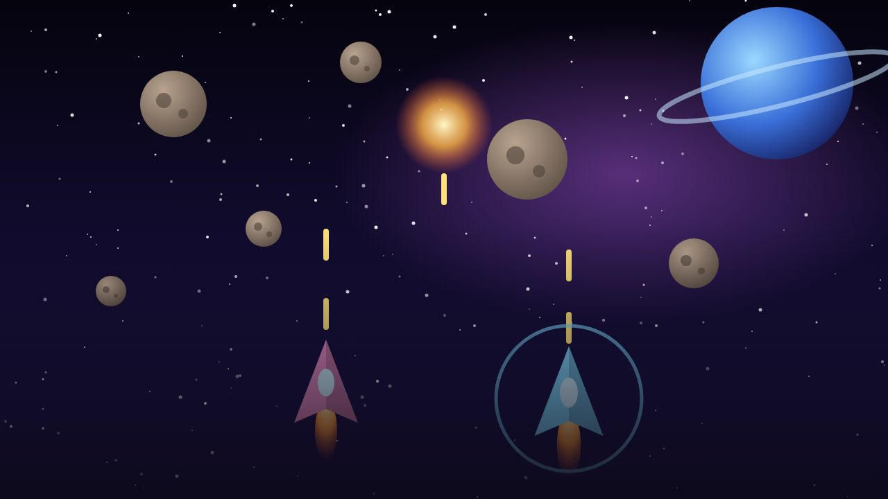

Así se verían en la fila "Populares para ti". Todavía no están en el prototipo.


Los pósters de ¿Qué vemos? son reales (Mujer bonita, La La Land y Algo para recordar) y se cargan del catálogo de TMDB, igual que las demás portadas del prototipo.